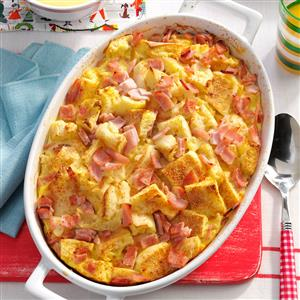

Easy Egg Recipe

Eggs Benedict Casserole
Prep time
25 mins
bake time
45 mins
Total time
1 hour 10 mins
SERVES: 12
Ingredients
12 ounces Jones Canadian Bacon, chopped
6 English muffins, split and cut into 1-inch pieces
8 large eggs
2 cups 2% milk
1 teaspoon onion powder
1/4 teaspoon paprika
HOLLANDAISE SAUCE:
4 large egg yolks
1/2 cup heavy whipping cream
2 tablespoons lemon juice
1 teaspoon Dijon mustard
1/2 cup butter, melted
Directions:
Place half of the Canadian bacon in a greased 3-qt. or 13x9-in. baking dish; top with English muffins and remaining bacon. In a large bowl, whisk eggs, milk and onion powder; pour over top. Refrigerate, covered, overnight.
Preheat oven to 375°. Remove casserole from refrigerator while oven heats. Sprinkle top with paprika. Bake, covered, 35 minutes. Uncover; bake 10-15 minutes longer or until a knife inserted in the center comes out clean.
In top of a double boiler or a metal bowl over simmering water, whisk egg yolks, cream, lemon juice and mustard until blended; cook until mixture is just thick enough to coat a metal spoon and temperature reaches 160°, whisking constantly. Reduce heat to very low. Very slowly drizzle in warm melted butter, whisking constantly. Serve immediately with casserole. Yield: 12 servings (1-2/3 cups sauce).
Serve Hot. Enjoy!
NUTRITION
1 piece: 286 calories, 19g fat (10g saturated fat), 256mg cholesterol, 535mg sodium, 16g carbohydrate (4g sugars, 1g fiber), 14g protein.